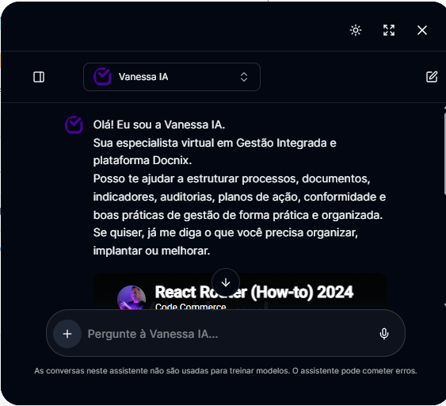
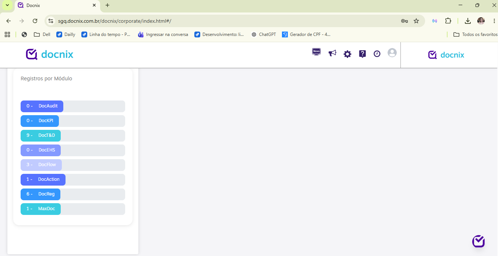
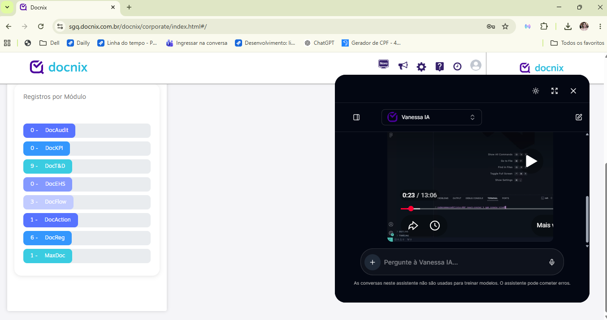
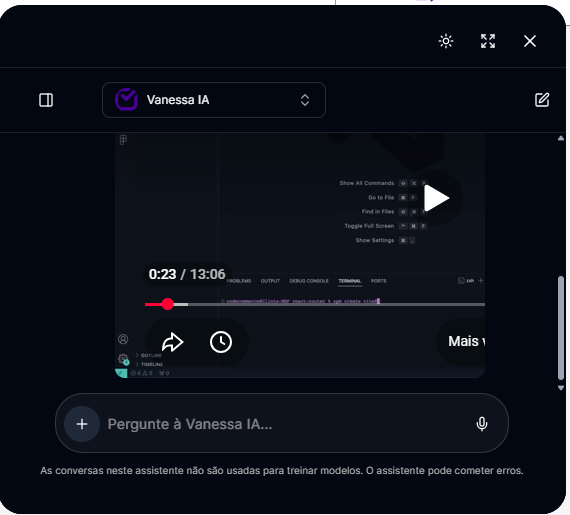
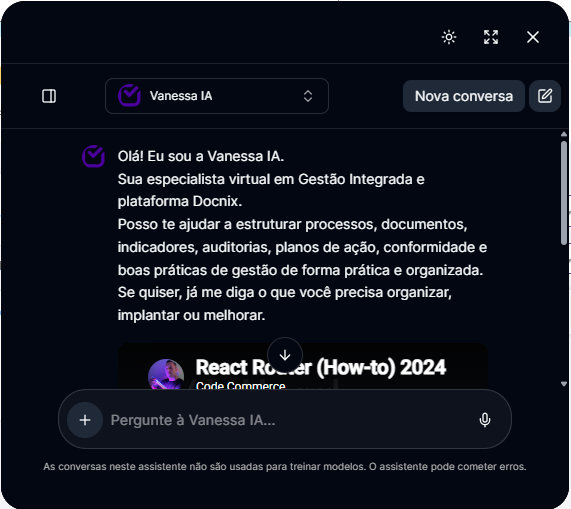
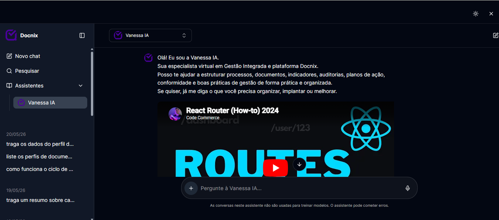
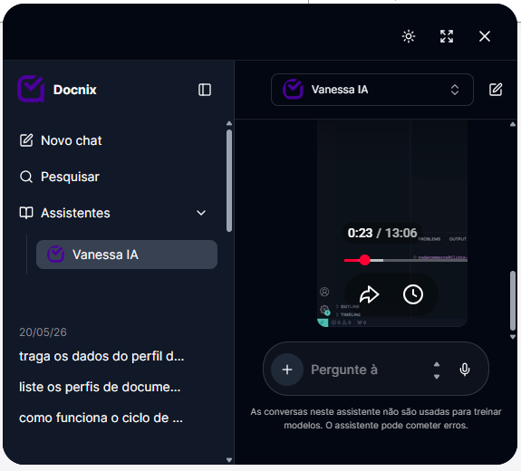
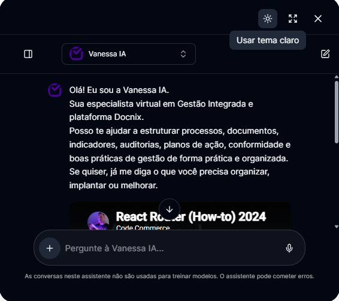
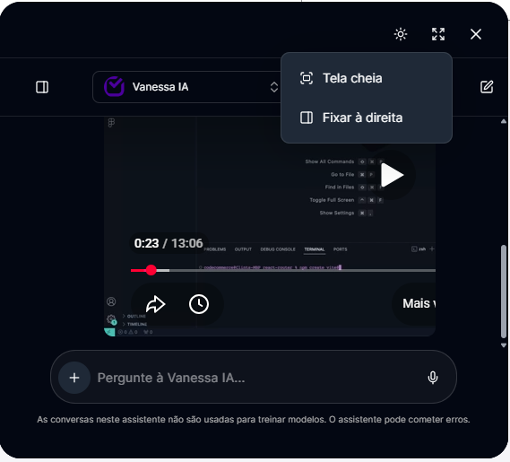
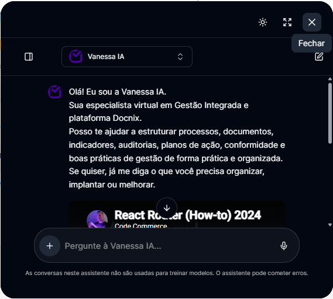

Sua especialista virtual em Gestão Integrada — organize processos, documentos, auditorias e indicadores com poucos cliques.
Desenvolvida para auxiliar usuários na organização de processos, documentos, auditorias, indicadores, planos de ação e conformidade — em uma interface simples, moderna e intuitiva.

O sistema inicia diretamente na plataforma Docnix. A assistente fica disponível através da logo localizada no canto inferior direito da tela.

↘ Logo de acessoAo clicar na logo, a Vanessa IA é exibida como uma janela ancorada à direita — sem interromper o que você estava fazendo na plataforma Docnix.

Na parte superior estão os principais controles do sistema. A área central apresenta a conversa.
Na parte superior da conversa existe um seletor de assistentes para direcionar a conversa para o perfil escolhido.
Atualmente apenas a Vanessa IA está disponível para uso. Novos perfis poderão ser liberados em versões futuras.
Na parte inferior da tela encontra-se o campo “Pergunte à Vanessa IA…” — ponto de entrada de todas as mensagens.
Ao lado esquerdo do campo de mensagem está o botão “+”. Ele permite anexar arquivos para análise da IA.
A IA utilizará o conteúdo do arquivo como contexto da conversa.

+ AnexarÀ direita do campo de mensagem está o ícone de microfone — permite enviar mensagens por voz com transcrição automática.

Inicia um chat vazio, sem utilizar o histórico anterior. Útil para começar um tema do zero.
Painel recolhível com acesso rápido a chats, busca e assistentes. Abra pelo ícone no canto superior esquerdo.

Localize conversas anteriores por palavras-chave ou retome diretamente pela lista organizada por data.


Alterna a aparência da interface entre tema escuro e tema claro, conforme a sua preferência visual.
Ajuste como a janela da Vanessa IA é exibida sobre a plataforma Docnix.
Acesse pelo ícone de layout no topo direito, ao lado do botão de tema.


No canto superior direito existe o botão “Fechar” — encerra a visualização da assistente sem afetar a plataforma Docnix.
As conversas neste assistente não são usadas para treinar modelos.
O assistente pode cometer erros — sempre revise informações críticas antes de aplicar.
Dúvidas sobre o sistema?
Contate o suporte Docnix.
Manual do Usuário v1.0
Vanessa IA · 2026